代表ポーズ
白い身体・服／線と顔 #5C5148／丸襟状スカーフ・胸の記号 #FF511B

Mimo・Luke・Gen・LUMIのキャラクター設定。三面図を造形の基準に、ポーズ・表情・小物・シーンを整理します。
小さな表現に気づき、聞いて、返して、一緒に待つ。
白い身体・服／線と顔 #5C5148／丸襟状スカーフ・胸の記号 #FF511B

白い服の袖・裾と胸の記号の形・位置は三面図、記号の色は配色表で固定。スカーフ・絵カード・ベルは小物一覧にまとめています。
発達フレームの配置例。以前作った音楽室・お話の木は「シーン設計」に掲載。
代表ポーズとシーン設計を参照。
これは既存の発達フレームの傾向。三面図の造形仕様とは分け、他媒体へ自動で固定しない。
背景量は利用ガイドに従う。Mimoと人物の大きさ、補助記号は場面ごとに確認する。
その子に合う量・速さ・方法を探す伴走型の応援者
飛び出す → 気づく → 相手に合わせる
白い身体・服／線と顔 #5C5148／首飾り #D7C862／淡い黄色のボール／淡いピンクの耳内側／胸の記号 #FF511B


道具と環境を変え、できる形を増やす探偵兼発明家
観察 → まず試す → 失敗から選び直す
白い毛・ベスト／灰茶の線／濃茶の眼鏡と顔／ブランドイエロー #D7C862 のスカーフ／橙の胸の記号


前後関係を整理し、複数の仮説を比べる分析者
心配する → 問いに変える → 前後を一緒に確かめる
代表ポーズ：今回は保留。
専門サイトを参考に、Mimo・Luke・Gen・LUMIの道具を各10点選定。基本小物・背景の見本も併せて掲載しています。
写真を見ながら左右にスクロール。写真はクリックで拡大、説明は「用途・出典を見る」から。
確認日：2026年9月19日。出典は用具の形と用途の参考、使う場面・描き方はHugMapでの提案です。「よく使う」はキャラクター設定上の選定案で、専門職の使用頻度ランキングではありません。
各項目のリンクから製品写真・仕様や専門資料を確認できます。口腔・食事用具は専門家と使う場面に限定し、発話を促す効果を一括して示しません。小部品や運動用具は対象年齢・支え方に合う場面を選びます。
道具は背景の淡い色と柔らかな質感へ統一。身につける小物の位置・形は三面図を参照。背景の道具は採用画像の一部を拡大した見本で、周囲を含みます。行動に必要なものだけ選びます。
伝える方法を増やし、小さな応答を待つ。食事用具は専門家と使う場面へ。
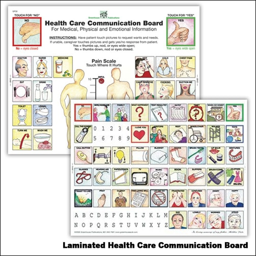
参考写真 ↗「もっと」「おしまい」を並べ、Mimoは選ばれた方へ応じる。
絵や写真を指して伝えるAACの方法。
使う場面 「もっと」「おしまい」を並べ、Mimoは選ばれた方へ応じる。
描くとき 角丸の平板と大きな絵枠。既存の絵カードと共通。
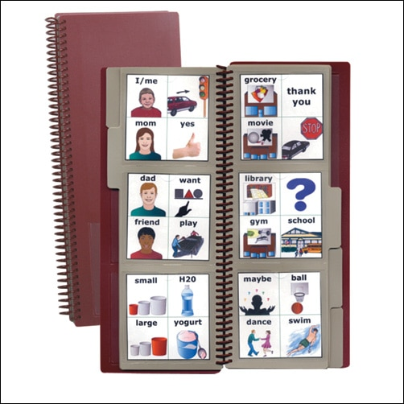
参考写真 ↗好きな遊びのページを一緒に開き、指や視線の動きを待つ。
持ち歩ける冊子もAACの選択肢。
使う場面 好きな遊びのページを一緒に開き、指や視線の動きを待つ。
描くとき 厚いページと見つけやすいタブ。
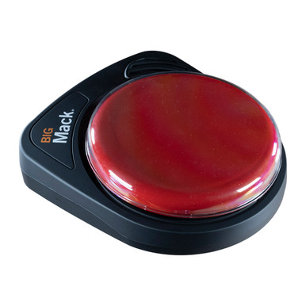
参考写真 ↗子どもの「もう一回」に、Mimoがもう一度音を返す。
大きなボタンで録音したメッセージを再生する機器。
使う場面 子どもの「もう一回」に、Mimoがもう一度音を返す。
描くとき 大きな丸い押し面と低い台座。
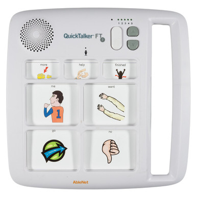
参考写真 ↗「見て」「やめたい」も選べる位置に置き、返事をする。
複数の録音メッセージを選べる携帯機器。
使う場面 「見て」「やめたい」も選べる位置に置き、返事をする。
描くとき 平たい長方形に大きな選択枠。
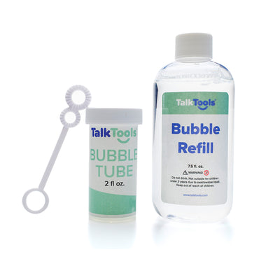
参考写真 ↗大人が作った泡を一緒に見て、「もう一回」の合図を待つ。
TalkToolsにシャボン玉用具の取り扱いがある。
使う場面 大人が作った泡を一緒に見て、「もう一回」の合図を待つ。
描くとき 小瓶・持ち手・丸い輪。口へ入れる絵にしない。
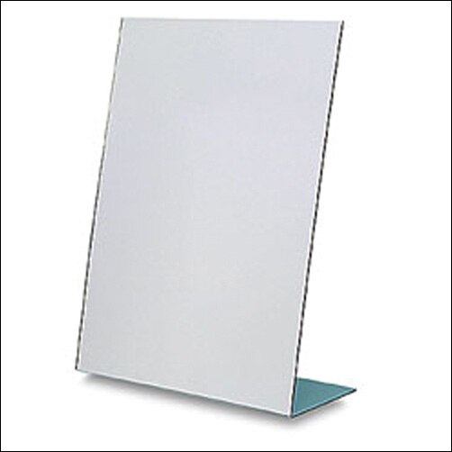
参考写真 ↗Mimoと子どもが自分の表情を見つける遊びへ展開する。
専門プログラムで口元を確認する鏡を使う。
使う場面 Mimoと子どもが自分の表情を見つける遊びへ展開する。
描くとき 丸い鏡面と持ち手。鏡遊びはHugMapでの応用案。
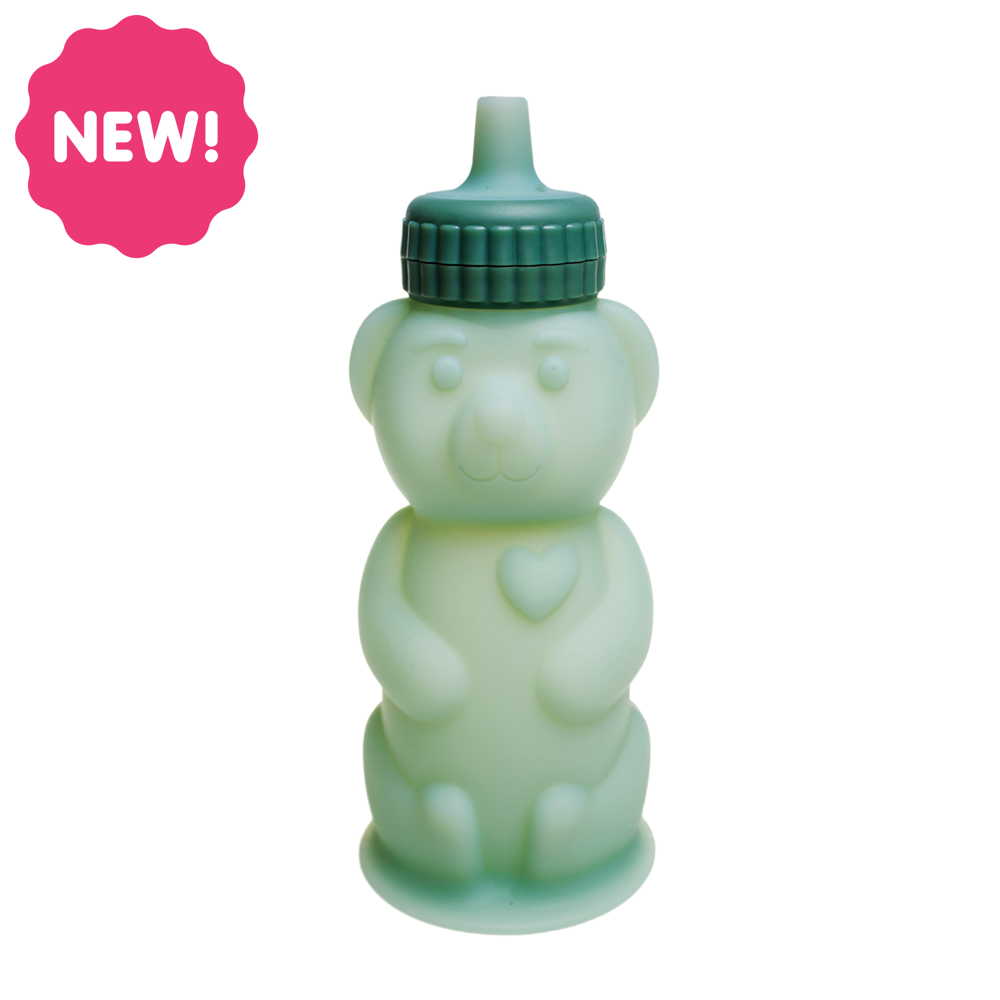
参考写真 ↗専門家が用意したカップを置き、Mimoは飲む合図を待つ。
Honey Bearはストロー飲みを支えるカップ。
使う場面 専門家が用意したカップを置き、Mimoは飲む合図を待つ。
描くとき 柔らかい容器・ふた・ストローを明確にする。
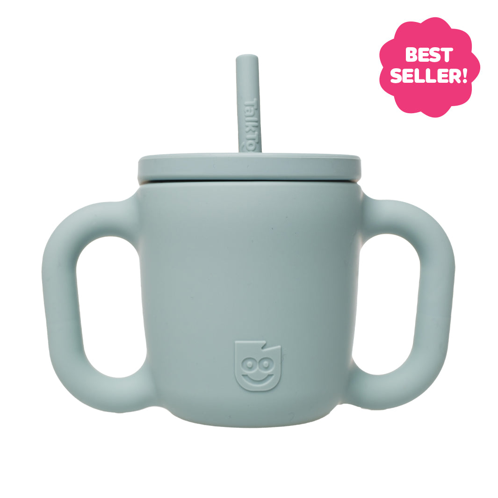
参考写真 ↗子どもがカップへ手を伸ばす瞬間を見守る。
Itsy Cup Setはストロー・オープンカップの形態に対応。
使う場面 子どもがカップへ手を伸ばす瞬間を見守る。
描くとき 小さい口径と短い胴。ストロー版との違いを示す。
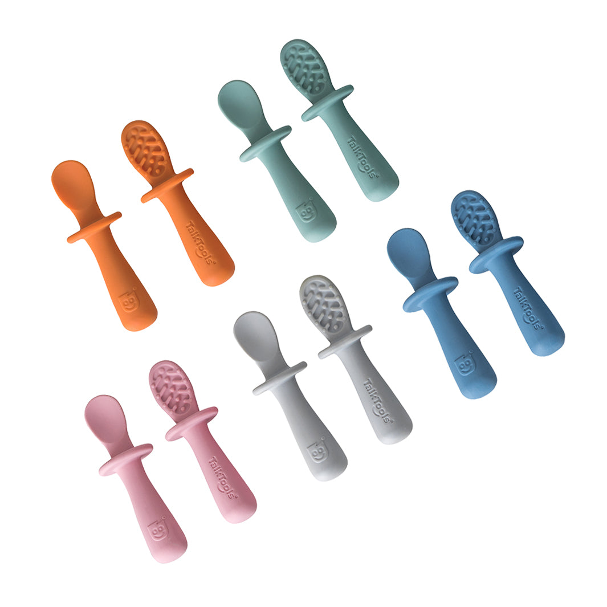
参考写真 ↗Mimoは急かさず、子どもが持ち直す時間を待つ。
Itsy Spoonsは幼児の自分で食べる動きに向けた用具。
使う場面 Mimoは急かさず、子どもが持ち直す時間を待つ。
描くとき 短い柄とスプーンの先。Lukeの道具操作場面とも共有。
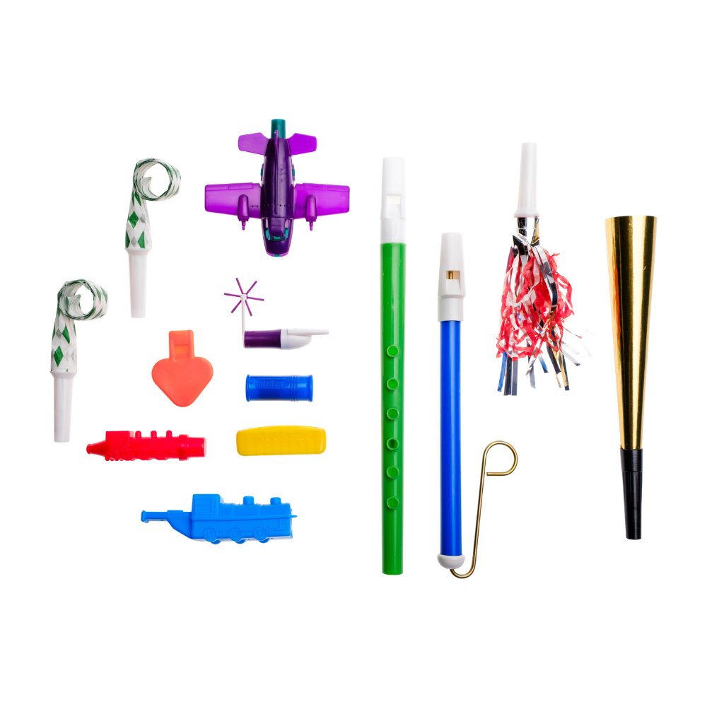
参考写真 ↗専門家が選んだ1本だけを使う場面で、Mimoが音を聞く。
Horn Kitは専門プログラムに使うホーンのセット。
使う場面 専門家が選んだ1本だけを使う場面で、Mimoが音を聞く。
描くとき 吹き口と音の出口。全セットを常に持たせない。
橙の丸い2片＋短い片結び。本人の識別に使う。
ことば以外の方法でも、選んで伝えられる。
音を鳴らす・止める・待つ、のやりとりに使う。
鳴らす・止める・音を返す
対象の楽器1つを手元へ。部屋全体は描かない。
座って待つ・並んで過ごす
座る位置を伝えるときだけ足元へ。
同じ場所に座る・相手を待つ
家具の一部分として薄く描く。大きな木は導入向け。
つまむ・つなぐ・描く。持ち方や道具の条件を一つずつ変える。
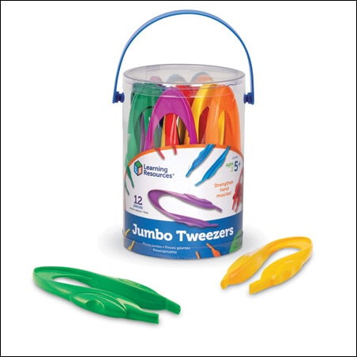
参考写真 ↗つかみにくい物に合わせて道具の開き幅を変える。
Busy Boxに大型ピンセットが含まれる。
使う場面 つかみにくい物に合わせて道具の開き幅を変える。
描くとき 先端の接点が見えるU字形。
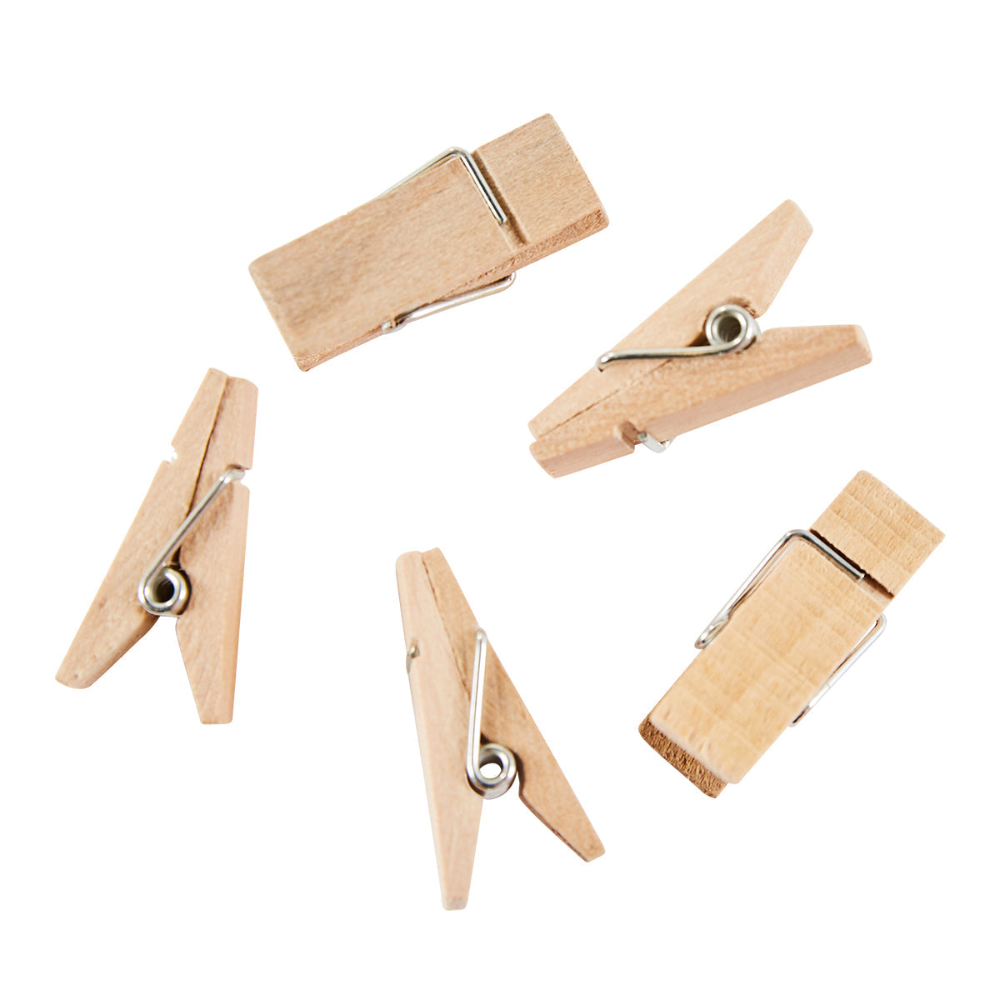
参考写真 ↗Lukeが台紙を支え、子どもが挟む位置を選ぶ。
Busy Boxに大小の洗濯ばさみが含まれる。
使う場面 Lukeが台紙を支え、子どもが挟む位置を選ぶ。
描くとき 押す部分と挟む先を描き分ける。
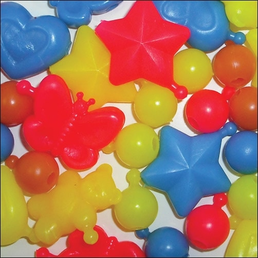
参考写真 ↗片側を支え、子どもが押してつなぐ続きを待つ。
Busy BoxにPop beadsが含まれる。
使う場面 片側を支え、子どもが押してつなぐ続きを待つ。
描くとき 大きな球と凹凸の接続部。
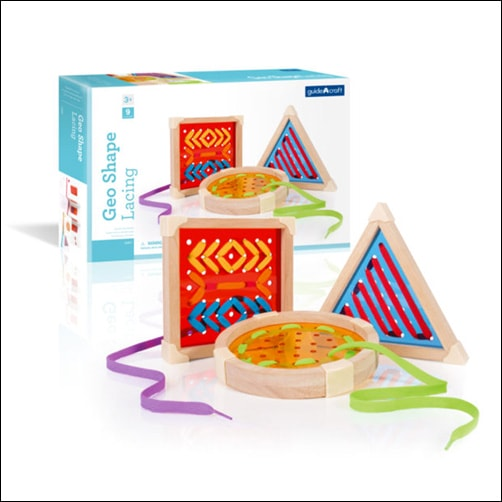
参考写真 ↗穴が見やすい向きに板を回して差し出す。
Busy Boxにひも通し活動が含まれる。
使う場面 穴が見やすい向きに板を回して差し出す。
描くとき 大きな穴と短いひも、端の位置。
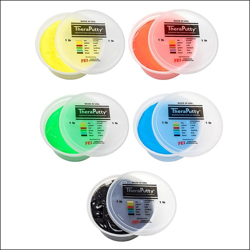
参考写真 ↗Lukeが柔らかさを選び直し、押す・伸ばす違いを見る。
Busy Boxの大人用には抵抗のあるパテが含まれる。
使う場面 Lukeが柔らかさを選び直し、押す・伸ばす違いを見る。
描くとき 小さな容器と変形する塊。子ども用の抵抗は別途選定。
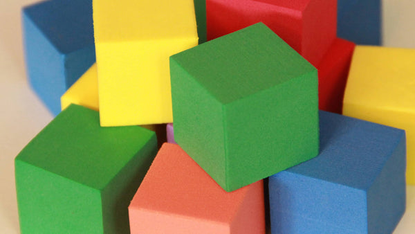
参考写真 ↗崩れたら土台を広くし、一緒に置き直す。
Busy Boxにフォームの立方体が含まれる。
使う場面 崩れたら土台を広くし、一緒に置き直す。
描くとき 柔らかな角の立方体。手元の数個だけ。
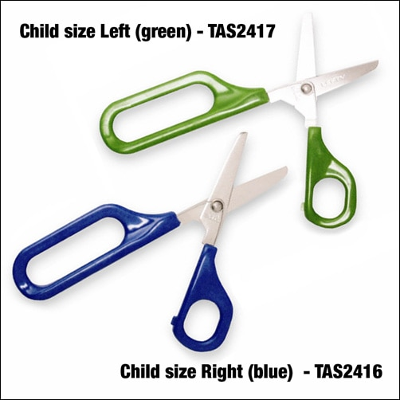
参考写真 ↗切りにくさを見て、紙の向きと持ち手を選び直す。
ばねで開く、長い指穴を備えたはさみ。
使う場面 切りにくさを見て、紙の向きと持ち手を選び直す。
描くとき 丸い刃先・大きなループ・開く仕組み。
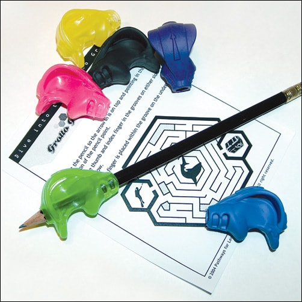
参考写真 ↗同じ紙で持ち心地を試し、使いやすい方を残す。
鉛筆に付けて指の位置を支える補助具。
使う場面 同じ紙で持ち心地を試し、使いやすい方を残す。
描くとき 鉛筆と指が接する部分を大きく見せる。
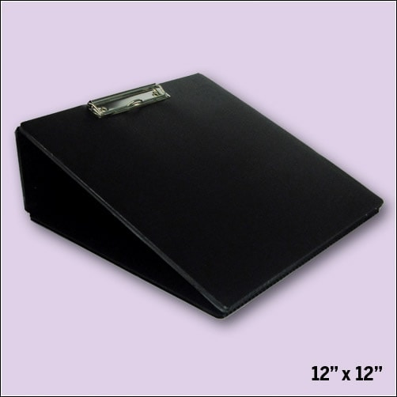
参考写真 ↗紙が見やすくなる角度を探してから描き始める。
書く面に傾きを付ける折り畳み式ボード。
使う場面 紙が見やすくなる角度を探してから描き始める。
描くとき 斜めの板・紙留め・低い支持部。
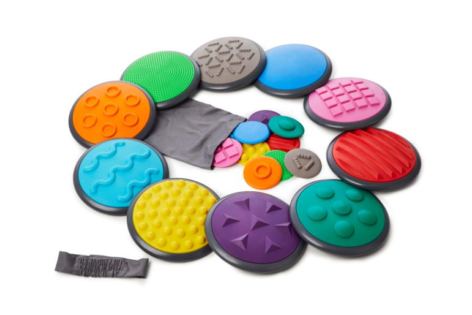
参考写真 ↗Lukeは手に持つ小さな円盤を2枚出し、好みを待つ。
大小の円盤で手足から異なる表面に触れられる。
使う場面 Lukeは手に持つ小さな円盤を2枚出し、好みを待つ。
描くとき 表面模様は少なく。Genの床用ディスクと共通。
細い黄色の帯と短い2本の端。
細い丸フレーム。原図の形と掛け位置を維持する。
背景と共通の木製の持ち手付き箱。布・ブラシ・トングをまとめ、場面では必要な物だけ出す。
触る・つまむ・握る
触れている布だけを控えめな色で示す。
握る・こする・持ち方を変える
持ち手と接触する手を隠さない。
触れる・すくう・比べる
トレーと机の端だけで場面を示す。
動く距離・高さ・速さを変え、その子の参加方法に合わせる。
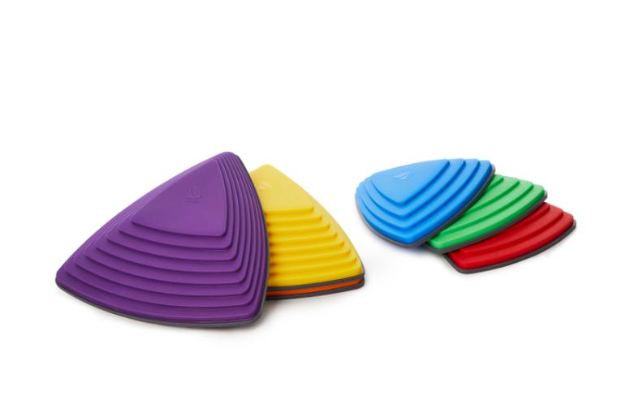
参考写真 ↗Genが間隔を狭め、踏む・またぐ・戻るを選べるようにする。
River Stonesは床に配置するバランス用の足場。
使う場面 Genが間隔を狭め、踏む・またぐ・戻るを選べるようにする。
描くとき 低い三角形の足場と滑りにくい縁。
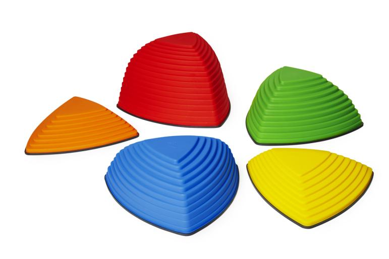
参考写真 ↗低い台から試し、上らず触れる参加も受け止める。
Hilltopsは高さが異なる足場のセット。
使う場面 低い台から試し、上らず触れる参加も受け止める。
描くとき 足場の高さと接地面。既存の木の台とは別形状。
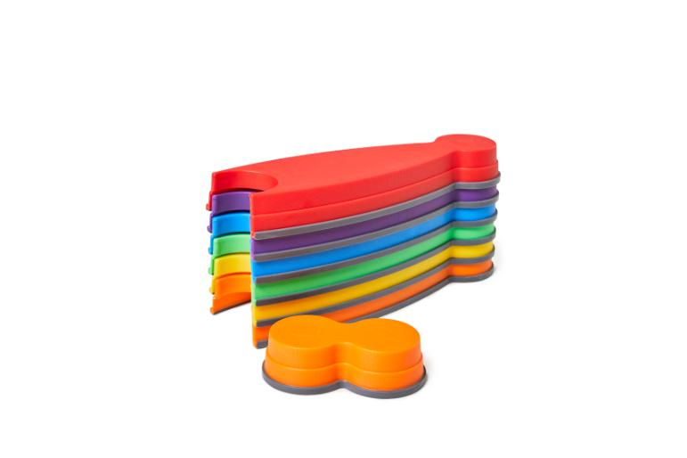
参考写真 ↗直線を短く作り、子どもが選んだ方へつなぎ替える。
Riverはつなげて経路を作る床用パーツ。
使う場面 直線を短く作り、子どもが選んだ方へつなぎ替える。
描くとき 低い細道と接続部。
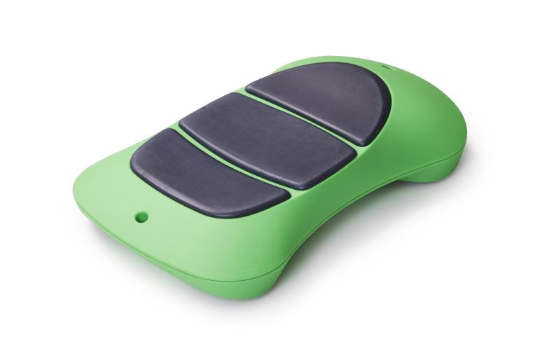
参考写真 ↗専門家が位置を整え、Genは横で移動の速さを合わせる。
Floor Surferは床で使う車輪付きボード。
使う場面 専門家が位置を整え、Genは横で移動の速さを合わせる。
描くとき 低い台・車輪・手を置く部分。
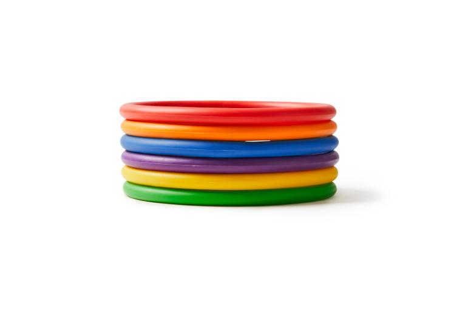
参考写真 ↗座ったまま渡す、床の目印にするなど方法を変える。
握る・渡す・投げるなどに使える柔らかい輪。
使う場面 座ったまま渡す、床の目印にするなど方法を変える。
描くとき 柔らかい太い輪。
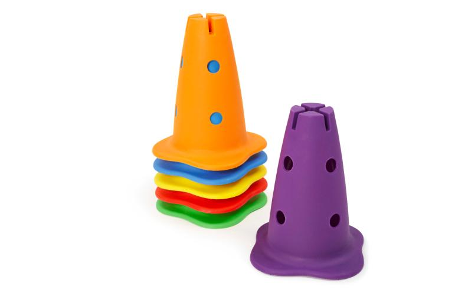
参考写真 ↗曲がる位置を近づけ、短い道のりに変える。
リングや棒を組み合わせられる多用途コーン。
使う場面 曲がる位置を近づけ、短い道のりに変える。
描くとき 広い底と丸い上端。必要なときだけ接続穴。
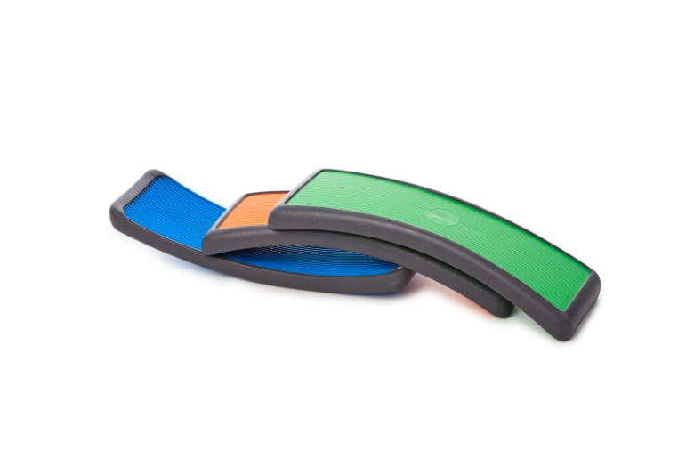
参考写真 ↗まず橋の向きで一緒に眺め、進みたい合図を待つ。
向きにより橋や揺れる台として使うアーチ。
使う場面 まず橋の向きで一緒に眺め、進みたい合図を待つ。
描くとき 曲線の板と広い両端。積み上げは描かない。
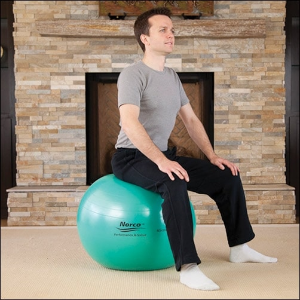
参考写真 ↗大人と一緒に大きな球をゆっくり押し返す。
専門用品店で運動・姿勢を支えるボールを扱う。
使う場面 大人と一緒に大きな球をゆっくり押し返す。
描くとき 既存の黄色いボールより大きい別サイズ。
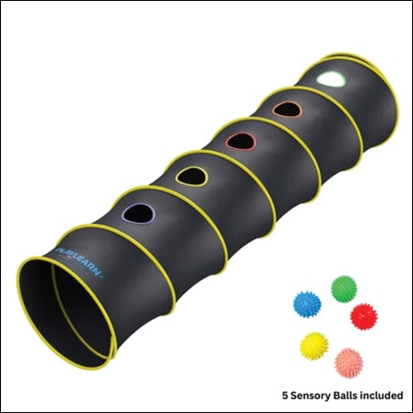
参考写真 ↗出口で待つGenとの距離を短くし、途中で戻ることも受け止める。
専門用品店で移動遊びのトンネルを扱う。
使う場面 出口で待つGenとの距離を短くし、途中で戻ることも受け止める。
描くとき 入口と出口が分かる短い筒。既存背景のトンネルと共通。
好きな感触の場所へ立つ、手で触る方法を一緒に探す。
大きい円盤は床、小さい円盤は手元で使う。
使う場面 好きな感触の場所へ立つ、手で触る方法を一緒に探す。
描くとき 薄い円盤と控えめな表面模様。Lukeと共有。
黄色い短い三角形。首飾り一式で1点。
転がす・渡す・蹴るなど、参加の方法を変えられる。
背景と共通の低い丸い木の台。上る・座る・支える場面の足場に使う。
転がす・渡す・蹴る
基本小物のボールと共通。動きの対象として着色。
上る・座る・支える
基本小物の低い台と共通。足と台の接点を見せる。
近づく・くぐる・出てくる
行動の理解に必要な場面だけ。広場の全景は省く。
前後の出来事と本人の感じ方を一緒に整理する。記録は理解のために使う。
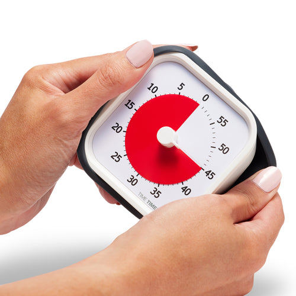
参考写真 ↗休む時間の見通しを共有し、必要なら予定を相談し直す。
色の面積で残り時間を示すタイマー。
使う場面 休む時間の見通しを共有し、必要なら予定を相談し直す。
描くとき 消えていく色面と中央のつまみ。既存の時計とは別用途。
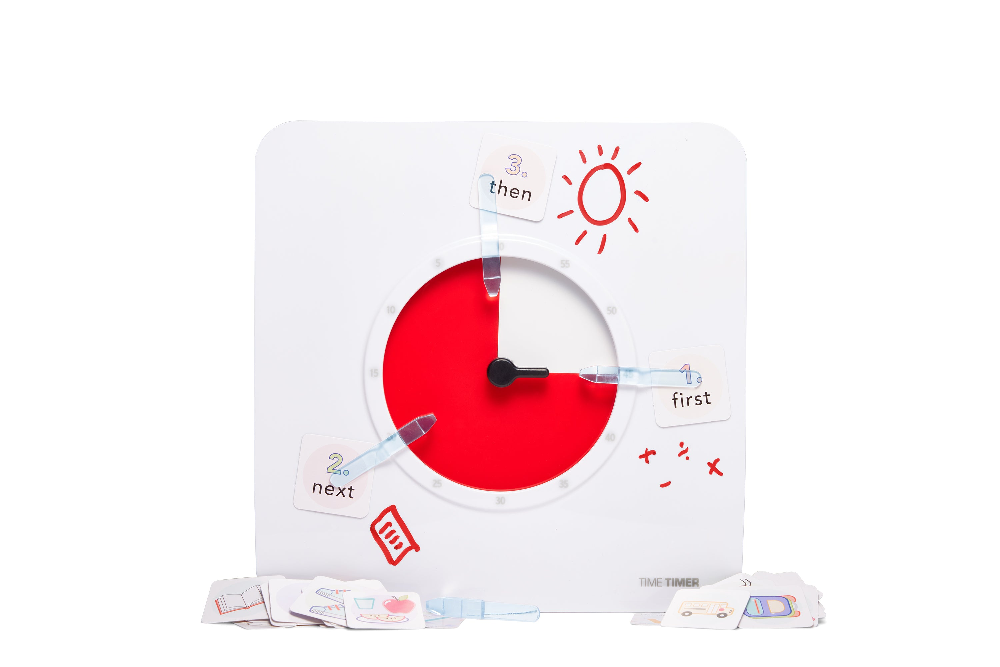
参考写真 ↗「次は何？」を一緒に確認し、変更したカードを差し替える。
活動カードを並べて予定を見える形にする用具。
使う場面 「次は何？」を一緒に確認し、変更したカードを差し替える。
描くとき カードの列と留め具。
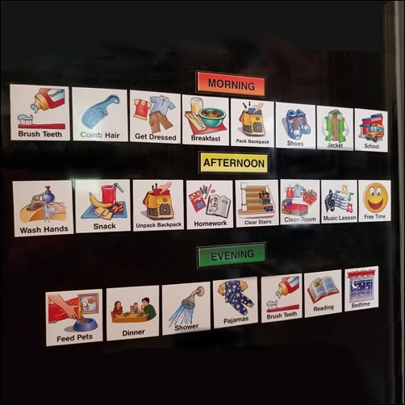
参考写真 ↗目の前のことと次の予定を2枠で示し、変更希望も聞く。
First–Then Boardは二つの活動を視覚的に示す。
使う場面 目の前のことと次の予定を2枠で示し、変更希望も聞く。
描くとき 2枠の小さな板。ごほうびの条件表にしない。
静かな場所・一緒に休むなど、次の過ごし方を相談する。
視覚支援には選択肢を見える形で示す方法がある。
使う場面 静かな場所・一緒に休むなど、次の過ごし方を相談する。
描くとき 大きな選択枠。MimoのAACボードと共通。
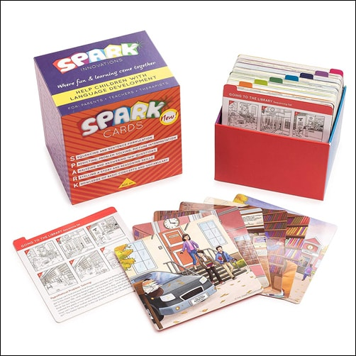
参考写真 ↗「その前に何があった？」と3枚を並べ直す。
場面を並べ、前後や理由を話し合うカード。
使う場面 「その前に何があった？」と3枚を並べ直す。
描くとき 既存の3枚カードを使い、内容を場面に合わせる。
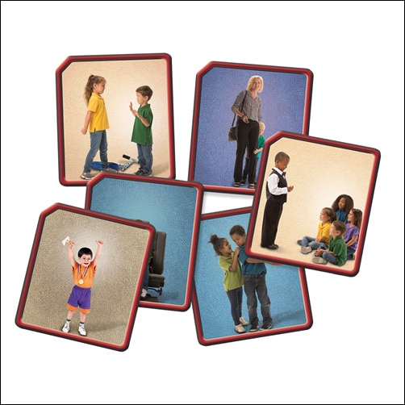
参考写真 ↗似ている感じを本人に選んでもらい、決めつけずに聞く。
感情について話し合う写真カード。
使う場面 似ている感じを本人に選んでもらい、決めつけずに聞く。
描くとき 大きな顔・場面枠。表情だけで内面を断定しない。
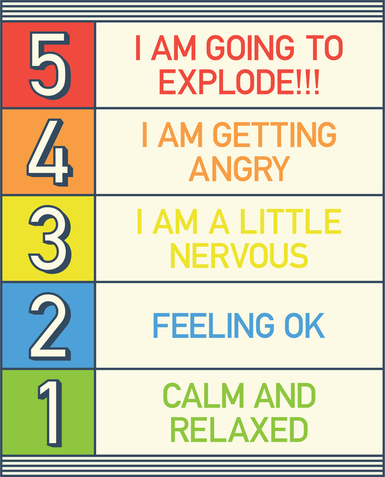
教材見本 ↗本人の言葉で「いまはこのくらい」を共有する。
5段階などで状態の違いを可視化する教材。
使う場面 本人の言葉で「いまはこのくらい」を共有する。
描くとき 縦の段階と可動の目印。善悪の点数にしない。
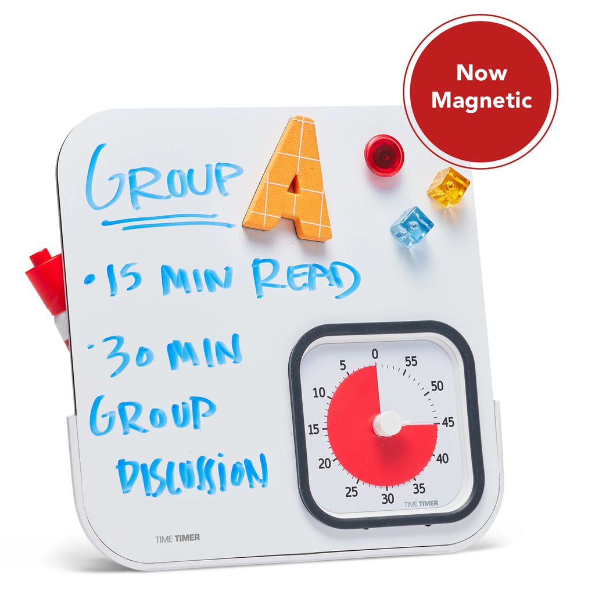
参考写真 ↗考えを2案描き、分かったことだけ残す。
書き消しできる予定・メモ用のボード。
使う場面 考えを2案描き、分かったことだけ残す。
描くとき 木色の枠・白い面・短いペン。
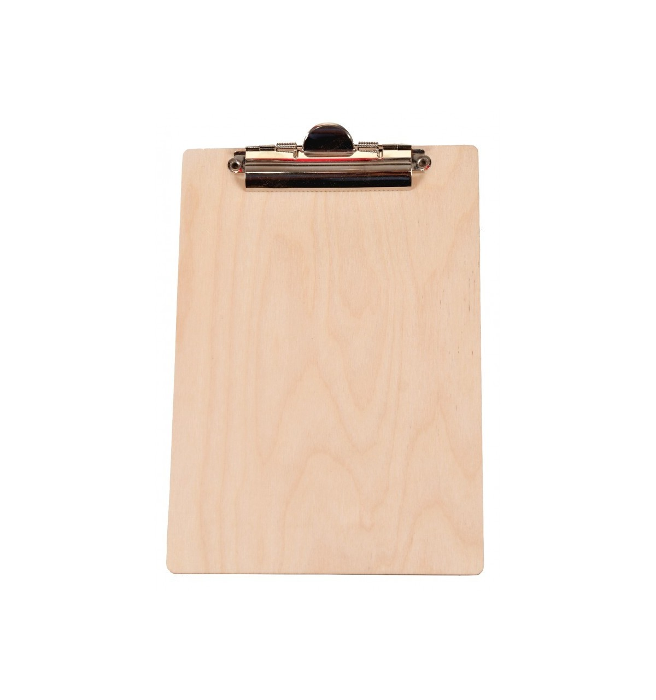
参考写真 ↗LUMIが大人と観察した事実を書き、複数の可能性を比べる。
ABC記録は前の出来事・行動・後の出来事を整理する。
使う場面 LUMIが大人と観察した事実を書き、複数の可能性を比べる。
描くとき 3列の用紙と紙留め。診断結果の用紙にしない。
用途の出典：Vanderbilt University IRIS · Descriptive Assessments ↗
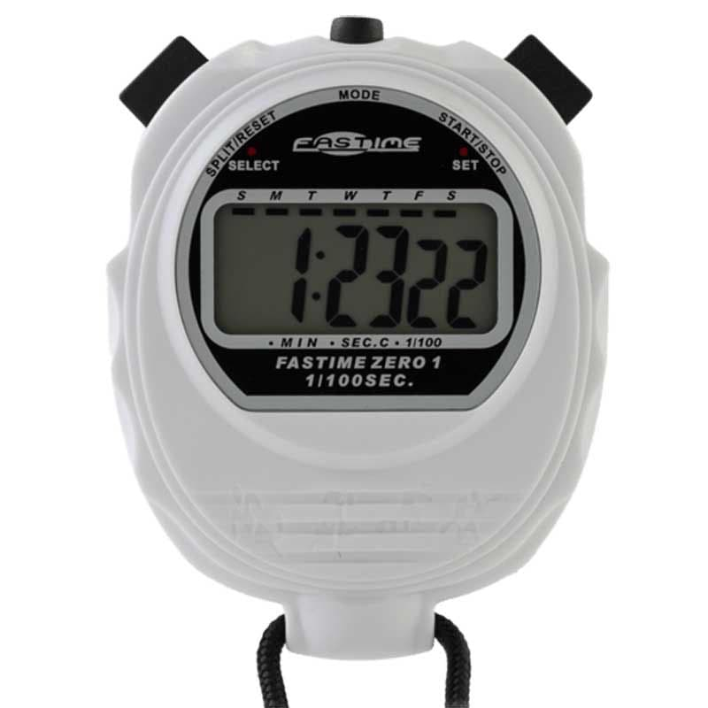
参考写真 ↗大人が同じ長さの観察時間をそろえ、場面を振り返る。
IRISの観察教材では時間を測り記録する。
使う場面 大人が同じ長さの観察時間をそろえ、場面を振り返る。
描くとき 開始・停止ボタンと短い記録欄。速さを競う場面にしない。
用途の出典：Vanderbilt University IRIS · Frequency and Interval Recording ↗
小さな紫系の蝶ネクタイ。首飾りとして1点。
出来事の前・途中・後を並べて確かめる。3枚一組で1点。
木枠と生成りの文字盤。出来事の時間や、待つ間を共有する。
前後を並べる・違いを見る
基本小物のカードと同じ用途。背景の枚数は固定数ではない。
待つ時間・出来事の時間を共有する
基本小物と共通。文字盤の細部を主役にしない。
相談・解説の場所を示す
主に紹介や漫画の導入。行動カードには原則入れない。
単体図：内蔵image_genで作成。首飾りの塗りは指定HEXへ直接置換済み。
以前のbackground資料を、Mimo・Luke・Gen・LUMIの4つの場所に整理。
4つの場所に共通の画風を適用。部屋の役割と昼夜の違いを保ち、線・描き込み・影をそろえています。
温かい木と植物、丸みのある形、滑らかな淡い色面。輪郭は素材になじむ細い色線とし、影は控えめに。木目・布・葉の細部を減らし、中央は活動のために空けます。LUMIの青紫は夜の光として残します。
聞く・伝える・続きを待つ

触る・試す・道具を変える

動く・挑戦する・休む

前後を並べる・比べる・考える

背景の目印は周囲に寄せ、中央に対話・活動の余白を残す。動物の持ち物3点と、部屋の設備は別に管理する。白背景の発達フレームと、部屋全体を描く背景は用途を分ける。
場所の役割：世界・空間の物語マップ。画像：outputs/backgrounds/chat/。構図・配色の説明は今回の画像観察による整理で、固定済みの数値仕様ではありません。
顔を描かず、手足・姿勢・相手との距離で行動を伝える。

うつぶせ。大きな頭と短く丸い身体。
約3.1頭身。丸い胴と、少しふっくらした腕・脚。
約3.2頭身。丸みを残し、胴と手足を少し長めに。
描画用の体格分類です。年齢・身長・発達の基準値ではありません。赤ちゃんはうつぶせを基本見本にし、幼児2型は立位で比較しています。BとCは足元をそろえ、BをCの約8割の高さで表示しています。これは比較用の表示比率で、実際の年齢別身長を示すものではありません。
姿勢・手の向き・距離で、子どもへの関わりを伝える。
線：子どもは外線4px・内線3px。大人は外線3px・内線2.5px。丸い線端・角、不透明度100%。
塗り：人物は白 #FFFFFF、背景は暖かな白 #FFFCF7。
影：#EEDCC6・35%。薄い接地影として独立させる。
質感：滑らかな曲線＋ごく軽い粒子感。線幅の揺れは±10%以内を目安に。
1536×1024pxの場面原稿を基準に、役割ごとの線幅を統一。50%書き出しでは子ども2／1.5px、大人1.5／1.25px。小サイズでは不要な内線を省略します。
これからの制作・修正に使う基準です。既存の生成画像は数値一致を未確認。
正面・側面を基に、関わる姿勢を4種類へ展開。淡いコーラルの線、顔の内側を省略する表現、長袖・長ズボンを共通にしています。
12分類・164項目。P0＝個体を決める／P1＝立体と衣装／P2＝演技と用途／P3＝納品と検証。不要な項目は「対象外」として理由を残します。
| 固定する | 動かせる | 別途決める |
|---|---|---|
| 採用した骨格比率、顔の基準位置、部位数、結び側、ロゴ原稿、色の役割、人物像の核 | ポーズ、視線、まばたき、規定内の感情、場面の持ち物、相手との距離、画面内の全体縮尺 | 耳・冠羽・翼・尾の可動範囲、開口上限、衣替え、遠近による見え方、小サイズで省略する線 |
関節を動かしたり遠近が付いたりすれば、見かけの全高は変わります。立位のピクセル高を全ポーズへ強制せず、同じ骨格・部位比率を保ちます。形を決めたあとに色と線を合わせます。
今回ユーザーが指定した原図を最優先にします。以前の文章、試作、実用場面が原図と違うときは原図へ戻します。添付1の服・小物と添付2の寸法は用途別に参照し、両者の小物状態を合成しません。未掲載の演技だけを追加設計します。
各キャラにつき、①採用正面＋寸法 ②三面図＋45度 ③顔と表情 ④ポーズと接触 ⑤服・小物・配色 ⑥NG例と小サイズ見本をそろえます。見せるための一枚ボードに加え、制作に渡す個別画像と固定設定を固定ファイル名で保管し、変更履歴はGitで管理します。
生成時の固定文：［キャラID・Gitコミット］の採用正面／三面図を使用。［固定比率・顔・部位・服・小物・線・色］を維持。今回変えるのは［動詞・視線・道具・相手との距離・構図］のみ。［禁止差分］を追加しない。未承認の過去案を混ぜない。
造形と世界観を共通にし、何を主役にするかで配色と背景の量を変える。
| 用途 | 主役・配色 | 背景の使い方 |
|---|---|---|
| ① 発達の姿を探す | 子どもの動作とやり取り。動物は白い身体＋識別小物の色。 | 白〜生成り。行動に必要な対象物と、机の端・薄い地面など最小限の場所。 |
| ② 紹介・相談チャット | 相談相手のキャラクター。身体も含むカラー表現。 | 紹介・会話開始では部屋全体。一覧は本人中心。会話本文の背面は無地に近づける。 |
| ③ 漫画を交えた解説 | 理解してほしい出来事。行動を示すコマは①、案内役を紹介するコマは②。 | 導入で場所を示す → 背景を省いて動作・手元を見せる → 短く補足する。 |
アプリと識別小物は同じ色コードを使う。柔らかさは、余白・線・背景の淡い配色で整える。
#FFFFFFwhiteColor#291712blackColor#FFFFFFmainBackground#FF511BcomponentPrimaryBackground#D7C862componentSecondBackground#DCD5D2componentThirdBackground#7D2741componentForthBackground#F4F1F0componentFifthBackground#291712componentSixthBackground| 適用先 | 固定する色 | 扱い |
|---|---|---|
| Mimoの襟・スカーフ／全員の胸のマーク | #FF511B | ブランドオレンジ。不透明の単色。 |
| Luke・Genのスカーフ | #D7C862 | ブランドイエロー。不透明の単色。 |
| LUMIの蝶ネクタイ | #7D2741 | ブランドパープル。不透明の単色。 |
| 道具・背景 | 既存の淡い木色・生成りなど | ブランド色への一括置換はしない。対象物と識別小物が読める濃さにする。 |
| 動物の輪郭 | #5C5148 | 既存の線仕様を維持。アプリの文字色 #291712 とは役割を分ける。 |
発達カード・キャラクター紹介・漫画で、識別小物の色は共通。白い身体／カラーの身体に切り替えても変えない。スカーフには白いベール、半透明、強い陰影を重ねず、見え方を淡くしない。
色の基準はこの色票とHEX値。三面図は造形の基準として使用する。画像の縁のアンチエイリアスは混色を許容するが、塗りの内部は指定色を基準に確認する。小物一覧（props-main-four.png）の首飾り4点は指定HEXに更新済み。その他の既存イラストには色差が残るため、色の採取元には使わない。制作時はこの色票を適用する。
道具は背景と共通の淡い木の色・黄色・生成りを使い、細い茶系の輪郭と控えめな陰影で描く。強い光沢・黒い太線・細かな木目は抑える。スカーフ・蝶ネクタイ・胸のマークは上記のブランド色で固定する。眼鏡はキャラクターの輪郭に合わせる。
同じ道具の形と基本色は用途間で共通。発達カードでは細部と影を省き、背景では場所になじませる。木の道具箱・丸い台・無地の黄色いボール・木枠の時計を共通の形とする。
造形・衣装の形は三面図、寸法は寸法図、線はanimal-line-style.json／human-silhouette-style.json、識別小物と胸マークの色はbrand-colors.json、身体の白／カラーと背景量はusage-guidelines.htmlを基準にする。原図の黒い線・胸記号や旧資料の色指定より現在の線・配色仕様を優先する。
アプリの主背景 #FFFFFF と、人物イラストの背景 #FFFCF7 は用途別の指定。カラー版の身体色・LUMIの追加ポーズ／表情は未確定で、掲載例から数値仕様を推定しない。
頭・耳・顔・身体の比率、服と小物の形は三面図を基準にする。白い身体の表現とカラー表現は用途別の配色として扱い、未完成／完成の差にしない。色を変える際に造形を変えない。
カラー版の身体色はキャラクターごとに配色表で管理する。現在の白いモデルから任意の色へ塗り替えず、カラーの使用例をそのまま造形の基準にはしない。
ベル・布・ボール・カードなど、その行動に必要なもの。
机の端、座布団、低い台、薄い地面。対象物に加える場所の要素は、まず1つから。
工房、音楽室、運動広場、研究室。小さな行動カードには原則使わない。
1コマ目：場所と関わる相手を示す。2コマ目：背景を省き、子どもの動作や手元を大きく示す。3コマ目：相手の応答・条件の違いを見せ、文章で補足する。行動の意味が1枚で伝わる場合は、コマを増やさない。